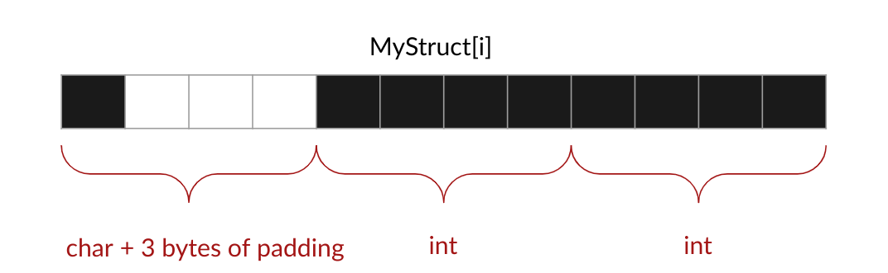
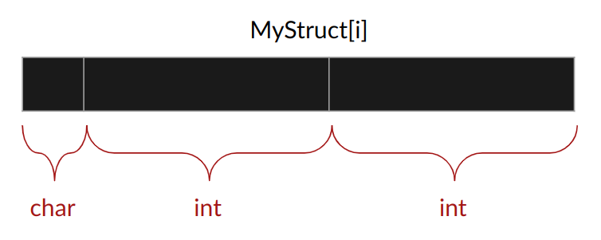
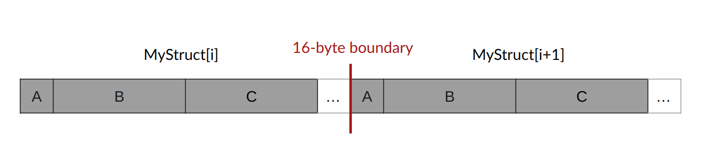
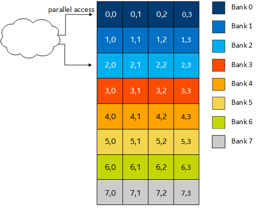

Optimizing SYCL programs for Intel® FPGA cards¶
Optimizing SYCL code for Intel FPGAs requires a combination of understanding the FPGA hardware, the SYCL programming model, and the specific compiler features provided by Intel. Here are some general guidelines to optimize Intel FPGA SYCL code.
Compared to OpenCL, the Intel® oneAPI DPC++ compiler has enhanced features to detect possible optimizations( vectorization, static coalescing, etc ...). Nonetheless, some rules need to be followed to make sure the compiler is able to apply these optimizations.
Optimizing your design
As this course/workshop is only an introduction to the Intel® oneAPI for FPGA programming, we can't unfortunately provide all existing and possible optimizations. Many more optimizations can be found in the Intel official documentation.
Loop optimization¶
Loop unrolling is an optimization technique that aims to increase parallelism and, consequently, the throughput of certain computational tasks, particularly when implemented in hardware environments such as FPGAs.
-
Pipelining Synergy: Loop unrolling often goes hand in hand with pipelining in FPGAs. When loops are unrolled, each unrolled iteration can be pipelined, leading to even greater throughput enhancements.
-
Resource Utilization: While loop unrolling can significantly speed up operations, it also consumes more FPGA resources, like Logic Elements (LEs) and registers, because of the duplicated hardware. Hence, there's a trade-off between speed and resource utilization.
-
Memory Access: Unrolling loops that involve memory operations can lead to increased memory bandwidth utilization. In cases where memory bandwidth is a bottleneck, unrolling can provide substantial performance improvements.
-
Latency & Throughput: Loop unrolling doesn't necessarily reduce the latency of a single loop iteration (the time taken for one iteration to complete), but it can significantly improve the throughput (number of completed operations per unit time).
-
Reduction in Control Logic: Unrolling can reduce the overhead associated with the loop control logic, such as incrementing the loop counter and checking the loop termination condition.
-
Unrolling loops will help to reduce the Initialization Interval (II) as you can notice on the previous figure.

Increasing throughput with loop unrolling
- Unrolling loop can be done using the
#pragma unroll <N> <N>is the unroll factor#pragma unroll 1: prevent a loop in your kernel from unrolling#pragma unroll: let the offline compiler decide how to unroll the loop
- Consider the following code that you can find at
oneAPI-samples/DirectProgramming/C++SYCL_FPGA/Tutorials/Features/loop_unroll - Note that Intel did not consider data alignment which could impact performance
- We included
#include <boost/align/aligned_allocator.hpp>to create aligned std::vector - The following SYCL code has been already compiled for you, execute it on the FPGA nodes for several data input size and record the throughput and kernel time
- What do you observe ?
1 2 3 4 5 6 7 8 9 10 11 12 13 14 15 16 17 18 19 20 21 22 23 24 25 26 27 28 29 30 31 32 33 34 35 36 37 38 39 40 41 42 43 44 45 46 47 48 49 50 51 52 53 54 55 56 57 58 59 60 61 62 63 64 65 66 67 68 69 70 71 72 73 74 75 76 77 78 79 80 81 82 83 84 85 86 87 88 89 90 91 92 93 94 95 96 97 98 99 100 101 102 103 104 105 106 107 108 109 110 111 112 113 114 115 116 117 118 119 120 121 122 123 124 125 126 127 128 129 130 131 132 133 134 135 136 137 138 139 140 141 142 143 144 145 146 147 148 149 150 151 152 153 154 155 156 157
//============================================================== // Copyright Intel Corporation // // SPDX-License-Identifier: MIT // ============================================================= #include <sycl/sycl.hpp> #include <sycl/ext/intel/fpga_extensions.hpp> #include <iomanip> #include <iostream> #include <string> #include <vector> #include <boost/align/aligned_allocator.hpp> using namespace sycl; using aligned64_vector= std::vector<float,boost::alignment::aligned_allocator<float,64>>; // Forward declare the kernel name in the global scope. // This FPGA best practice reduces name mangling in the optimization reports. template <int unroll_factor> class VAdd; // This function instantiates the vector add kernel, which contains // a loop that adds up the two summand arrays and stores the result // into sum. This loop will be unrolled by the specified unroll_factor. template <int unroll_factor> void VecAdd(const aligned64_vector &summands1, const aligned64_vector &summands2, aligned64_vector &sum, size_t array_size) { #if FPGA_SIMULATOR auto selector = sycl::ext::intel::fpga_simulator_selector_v; #elif FPGA_HARDWARE auto selector = sycl::ext::intel::fpga_selector_v; #else // #if FPGA_EMULATOR auto selector = sycl::ext::intel::fpga_emulator_selector_v; #endif try { queue q(selector,property::queue::enable_profiling{}); auto device = q.get_device(); std::cout << "Running on device: " << device.get_info<sycl::info::device::name>().c_str() << std::endl; buffer buffer_summands1(summands1); buffer buffer_summands2(summands2); buffer buffer_sum(sum); event e = q.submit([&](handler &h) { accessor acc_summands1(buffer_summands1, h, read_only); accessor acc_summands2(buffer_summands2, h, read_only); accessor acc_sum(buffer_sum, h, write_only, no_init); h.single_task<VAdd<unroll_factor>>([=]() [[intel::kernel_args_restrict]] { // Unroll the loop fully or partially, depending on unroll_factor #pragma unroll unroll_factor for (size_t i = 0; i < array_size; i++) { acc_sum[i] = acc_summands1[i] + acc_summands2[i]; } }); }); double start = e.get_profiling_info<info::event_profiling::command_start>(); double end = e.get_profiling_info<info::event_profiling::command_end>(); // convert from nanoseconds to ms double kernel_time = (double)(end - start) * 1e-6; std::cout << "unroll_factor " << unroll_factor << " kernel time : " << kernel_time << " ms\n"; std::cout << "Throughput for kernel with unroll_factor " << unroll_factor << ": "; std::cout << std::fixed << std::setprecision(3) #if defined(FPGA_SIMULATOR) << ((double)array_size / kernel_time) / 1e3f << " MFlops\n"; #else << ((double)array_size / kernel_time) / 1e6f << " GFlops\n"; #endif } catch (sycl::exception const &e) { // Catches exceptions in the host code std::cerr << "Caught a SYCL host exception:\n" << e.what() << "\n"; // Most likely the runtime couldn't find FPGA hardware! if (e.code().value() == CL_DEVICE_NOT_FOUND) { std::cerr << "If you are targeting an FPGA, please ensure that your " "system has a correctly configured FPGA board.\n"; std::cerr << "Run sys_check in the oneAPI root directory to verify.\n"; std::cerr << "If you are targeting the FPGA emulator, compile with " "-DFPGA_EMULATOR.\n"; } std::terminate(); } } int main(int argc, char *argv[]) { #if defined(FPGA_SIMULATOR) size_t array_size = 1 << 4; #else size_t array_size = 1 << 26; #endif if (argc > 1) { std::string option(argv[1]); if (option == "-h" || option == "--help") { std::cout << "Usage: \n<executable> <data size>\n\nFAILED\n"; return 1; } else { array_size = std::stoi(option); } } aligned64_vector summands1(array_size); aligned64_vector summands2(array_size); aligned64_vector sum_unrollx1(array_size); aligned64_vector sum_unrollx2(array_size); aligned64_vector sum_unrollx4(array_size); aligned64_vector sum_unrollx8(array_size); aligned64_vector sum_unrollx16(array_size); // Initialize the two summand arrays (arrays to be added to each other) to // 1:N and N:1, so that the sum of all elements is N + 1 for (size_t i = 0; i < array_size; i++) { summands1[i] = static_cast<float>(i + 1); summands2[i] = static_cast<float>(array_size - i); } std::cout << "Input Array Size: " << array_size << "\n"; // Instantiate VecAdd kernel with different unroll factors: 1, 2, 4, 8, 16 // The VecAdd kernel contains a loop that adds up the two summand arrays. // This loop will be unrolled by the specified unroll factor. // The sum array is expected to be identical, regardless of the unroll factor. VecAdd<1>(summands1, summands2, sum_unrollx1, array_size); VecAdd<2>(summands1, summands2, sum_unrollx2, array_size); VecAdd<4>(summands1, summands2, sum_unrollx4, array_size); VecAdd<8>(summands1, summands2, sum_unrollx8, array_size); VecAdd<16>(summands1, summands2, sum_unrollx16, array_size); // Verify that the output data is the same for every unroll factor for (size_t i = 0; i < array_size; i++) { if (sum_unrollx1[i] != summands1[i] + summands2[i] || sum_unrollx1[i] != sum_unrollx2[i] || sum_unrollx1[i] != sum_unrollx4[i] || sum_unrollx1[i] != sum_unrollx8[i] || sum_unrollx1[i] != sum_unrollx16[i]) { std::cout << "FAILED: The results are incorrect\n"; return 1; } } std::cout << "PASSED: The results are correct\n"; return 0; }
| Unroll factor | kernel execution time (ms) | Throughput (GFlops) |
|---|---|---|
| 1 | 77 | 0.447 |
| 2 | 58 | 0.591 |
| 4 | 43 | 0.804 |
| 8 | 40 | 0.857 |
| 16 | 39 | 0.882 |
- Increasing the unroll factor improves throughput
- Nonetheless, unrolling large loops should be avoided as it would require a large amount of hardware
Recording kernel time
- In this example, we have also seen how to record kernel time.
- Using the property `property::queue::enable_profiling{}`` adds the requirement that the runtime must capture profiling information for the command groups that are submitted from the queue
- You can the capture the start & end time using the following two commands:
double start = e.get_profiling_info<info::event_profiling::command_start>();double end = e.get_profiling_info<info::event_profiling::command_end>();
Caution with nested loops
- Loop unrolling involves replicating the hardware of a loop body multiple times and reducing the trip count of a loop. Unroll loops to reduce or eliminate loop control overhead on the FPGA.
- Loop-unrolling can be used to eliminate nested-loop structures.
- However avoid unrolling the outer-loop which will lead to Resource Exhaustion and dramatically increase offline compilation
SIMD Work Items for ND-Range kernels¶
- ND-range kernel should use instead of classical data-parallel kernels
- The work-group size needs to be set using the attribute
[[sycl::reqd_work_group_size(1, 1, REQD_WG_SIZE)]] - To specify the number of SIMD work_items, you will need to add the following attribute
[[intel::num_simd_work_items(NUM_SIMD_WORK_ITEMS)]] - Note that NUM_SIMD_WORK_ITEMS should divide evenly REQD_WG_SIZE
- The supported values for NUM_SIMD_WORK_ITEMS are 2, 4, 8, and 16
Example
-
The 128 work-items are evenly distributed among 8 SIMD lanes
-
128/8 = 16 wide vector operation
-
The offline compiler coalesces 8 loads to optimize (reduce) the access to memory in case there are no data dependencies
Loop coalescing¶
Utilize the loop_coalesce attribute to instruct the Intel® oneAPI DPC++/C++ Compiler to merge nested loops into one, preserving the loop's original functionality. By coalescing loops, you can minimize the kernel's area consumption by guiding the compiler to lessen the overhead associated with loop management.
Coalesced two loops
[[intel::loop_coalesce(2)]]
for (int i = 0; i < N; i++)
for (int j = 0; j < M; j++)
sum[i][j] += i+j;
Memory¶
Static coalescing¶
-
Static coalescing is performed by the Intel® oneAPI DPC++/C++ Compiler contiguous accesses to global memory can be merged into a single wide access.
-
For static memory coalescing to occur, your code should be structured so that the compiler can detect a linear access pattern at compile time. The initial kernel code depicted in the previous figure can leverage static memory coalescing, as all indices into buffers a and b increase with offsets recognizable during compilation.

Data structure alignment¶
In order to performance, structure alignment can be modified to be properly aligned. By default, the offline compiler aligns these elements based on:
- The alignment should be a power of two.
- The alignment should be a multiple of the least common multiple (LCM) of the word-widths of the structure member sizes.
Let's take a simple but clear example to understand why alignment is so important.

-
Each element of MyStruct has 12 bytes due to padding
-
Recall that each transaction between the user kernel design and the memory controller is 512 bits wide to enable DMA
-
We have therefore 64/12 = 5.333 => alignment is far from optimal as the 6th element of MyStruct will be split between two 64-byte regions

-
Removing all padding will definitely reduce the size
-
Padding can be removed by adding the “packed” attribute, i.e, “attribute((packed))” in your kernel
-
Each element of MyStruct will have therefore 9 bytes
-
However, 64/9 = 7.111 => we still have some elements in multiple 64-bytes region and the alignment is sub-optimal

-
To improve performance, align structure such all elements belongs to a single 64-byte regions
-
Padding can still be removed by adding the “packed” attribute, i.e, “attribute((packed))”
-
Transaction size is 64 bytes, the minimum alignment which is also a multiple of the transaction size is 16
-
Enforce a 16-byte alignment with
__attribute__((aligned(16)))

Removing padding and changing structure alignment
-
The following code show the impact of changing the alignmement and padding using three scenarii:
-
Default alignment and padding
-
Removing padding
-
Changing alignment
-
1 2 3 4 5 6 7 8 9 10 11 12 13 14 15 16 17 18 19 20 21 22 23 24 25 26 27 28 29 30 31 32 33 34 35 36 37 38 39 40 41 42 43 44 45 46 47 48 49 50 51 52 53 54 55 56 57 58 59 60 61 62 63 64 65 66 67 68 69 70 71 72 73 74 75 76 77 78 79 80 81 82 83 84 85 86 87 88 89 90 91 92 93 94 95 96 97 98 99 100 101 102 103 104 105 106 107 108 109 110 111 112 113 114 115 116 117 118 119 120 121 122 123 124 125 126 127 128 129 130 | |
| Scenario | Processing time (seconds) |
|---|---|
| Default alignment and padding | 14.33 |
| Removing padding | 6.35 |
| Changing alignment | 0.03 |
Memory¶
| Type | Access | Hardware |
|---|---|---|
| Host memory | read/write only by host | DRAM |
| Global memory (device) | read/write by host and work-items | FPGA DRAM (HBM, DDR,QDR) |
| Local memory (device) | read/write only by work-group | RAM blocks |
| Constant memory (device) | read/write by host read only by work-items | FPGA DRAM RAM blocks |
| Private memory device | read/write by single work-item only | RAM blocks Registers |
-
Transfers between host memory and global device memory should leverage DMA for efficiency.
-
Of all memory types on FPGAs, accessing device global memory is the slowest.
-
In practice, using local device memory is advisable to reduce global memory accesses.
Local memory in ND-Range kernels¶
- You can improve memory access by using local and private memory.
- When you define a private array, group local memory, or a local accessor, the Intel® oneAPI DPC++/C++ Compiler generates kernel memory in the hardware. This kernel memory is often termed on-chip memory since it originates from memory resources, like RAM blocks, present on the FPGA.
- Local or private memory is a fast memory that should be favored when resources allow.
Private memory
-
Two ways to define local memory for work-groups:
-
If you have function scope local data using group_local_memory_for_overwrite, the Intel® oneAPI DPC++/C++ Compiler statically sizes the local data that you define within a function body at compilation time.
-
For accessors in the local space, the host assigns their memory sizes dynamically at runtime. However, the compiler must set these physical memory sizes at compilation time. By default, that size is 16 kB.
-
Local memory
- The ND-Range kernel has 16 workgroups with 16 work items for each group.
- A group-local variable (int[16]) is created for each group and shared through a multi_ptr to all work-items of the same group
- Use sycl::local_accessor when data needs to be retained and shared within the same work-group and when precise control over data access and synchronization is necessary. Opt for group_local_memory_for_overwrite when you need temporary storage that can be efficiently reused across multiple work-groups, without persistence or heavy synchronization overhead.
Kernel Memory System¶
-
Before diving into the different settings, we need to introduce some definitions:
-
Port: a memory port serves as a physical access point to memory, connecting to one or more load-store units (LSUs) within the datapath. An LSU can interface with multiple ports, and a port can be linked to multiple LSUs.
-
Bank: a memory bank is a division within the kernel memory system, holding a unique subset of the kernel's data. All data is distributed across these banks, and every memory system has at least one bank.
-
Replicate: a memory bank replicate is a copy of the data within a memory bank, with each replicate containing identical data. Replicates are independently accessible, and every memory bank includes at least one replicate.
-
Private Copy: a private copy is a version of data within a replicate, created for nested loops to support concurrent outer loop iterations. Each outer loop iteration has its own private copy, allowing different data per iteration.
-
Settings memory banks¶
- Local data can be stored in separate local memory banks for parallel memory accesses
- Number of banks of a local memory can be adjusted (e.g., to increase the parallel access)
- Add the following attributes
[[intel::numbanks(#NB), intel::bankwidth(#BW)]]:#NB: number of banks#BW: bankwidth to be considered in bytes
- Ex:
[[intel::numbanks(8), intel::bankwidth(16)]] int lmem[8][4]; - All rows accessible in parallel with numbanks(8)
- Different configurations patterns can be adopted

Masking the last index
- Intel's documentation states that "To enable parallel access, you must mask the dynamic access on the lower array index"
Local memory replication¶
Example
- The offline compiler can replicate the local memory
- This allows to create multiple ports
- Behaviour:
- All read ports will be accessed in parallel
- All write ports are connected together
- Data between replicate is identical
- Parallel access to all ports is possible but consumes more hardware resources
[[intel::max_replicates(N)]]control the replication factor